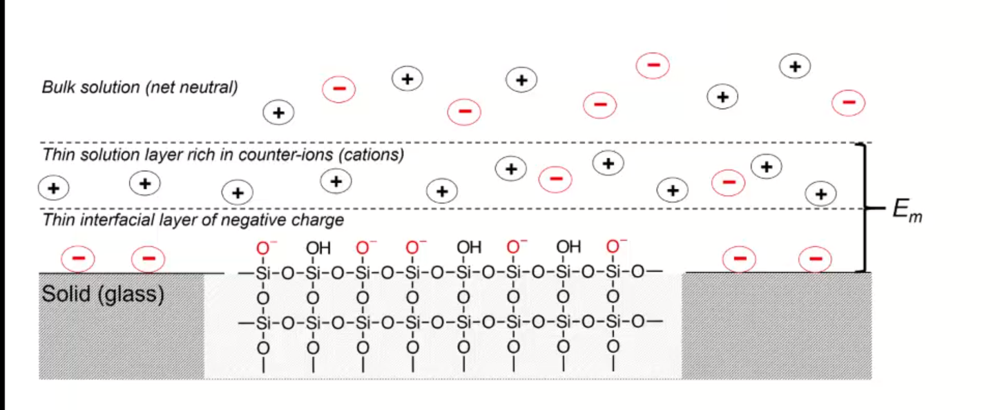

Contents:
- Define electric potential.
- Draw and label a diagram of a galvanic cell, write the shorthand cell notation for a galvanic cell, and explain the role of each component in galvanic cell.
- Write the Nernst equation and use it and standard potentials to calculate galvanic cell potentials.
- Explain how potentiometry can be used to determine analyte concentrations.
- Describe how a redox titration can be used to determine the concentration of an analyte,
- calculate the concentration of the unknown from redox titration data,
- and calculate the cell potential at different points during a redox titration.
- Describe the design and use of reference electrodes, including drawing simple diagrams of common reference electrodes.
- Describe the origin of membrane potentials and their analytical utility in different types of ion selective electrodes.
- Draw and label a diagram of a glass/pH electrode. Explain the principles of its operation and its sensitivity to pH.
- lecture 14
- Write and apply the Nikolsky equation.
- Draw diagrams and explain the principles of operation of liquid membrane and solid-state ISEs.
- mt 2 problems
Define electric potential.
- galvanic: initially positive (electrons want to move from anode to cathode)
- at eq: potential is 0
- reflects driving force of redox reaction towards eq
- half-cell and standard potentials:
- combo of standard half-cells determine overall cell potential
- V1 < V2
- V1: weak oxidizing agent, less easily reduced
- V2: stronger oxidizing agent, more easily reduced
- standard reduction potential: Ecell = Ecathode - Eanode
- Edeg is tabulated for reduction reactions, positive if spontaneous relative to SHE
- SHE is not easy to work with, use other standards like SCE
- Edeg is tabulated for reduction reactions, positive if spontaneous relative to SHE
- V1 < V2
- combo of standard half-cells determine overall cell potential
Draw and label a diagram of a galvanic cell, write the shorthand cell notation for a galvanic cell, and explain the role of each component in galvanic cell.
- cell types
- galvanic cell
- the opposite of electrolytic cell
- electrons spontaneously go towards positive charge
- anode (-): electrons leave, so oxidation occurs
- cathode (+): electrons arrive, reduction occurs
- the opposite of electrolytic cell
- electrolytic cell
- requires electricity
- electrical energy into chemical energy
- cell potential is negative
- galvanic cell
- salt bridge
- ensures the solution stays neutral
- completes circuit
- need ions with the same hydrated size so that they move at the same rate
- don’t want direct mixing of reduction/oxidation
Write the Nernst equation and use it and standard potentials to calculate galvanic cell potentials.
- Nerst: $$E = E^{o} - \frac{RT}{nF} \ln Q$$, $$E = E^{o} - \frac{0.0592}{n} \log Q$$
- for half cell or full reactions
- ΔG = − nFE, where E is potential difference, F is Faraday constant, n is unit charges per molecule
- maximum work extracted assuming no heat loss
- we get the Nerst equation by combining the above equation with gibbs equation:
$$-nFE = -nFE^{\circ} + RT \ln Q \\
E = E^\circ - \frac{RT}{nF} \ln Q$$
- when K = Q, cell potential is 0 and there is no driving force
- use Nerst equation to find potential at non-standard conditions, replace Q to get: $$E = E^\circ - \frac{RT}{nF} \ln \frac{\gamma_C^c [C]^c\gamma_D^d[D]^d}{\gamma_A^a[A]^a \gamma_B^b[B]^b}$$
- when K = Q, cell potential is 0 and there is no driving force
- can use Nerst on half and full reactions (for half, if there is solid reactant or product, just least as 1)
Explain how potentiometry can be used to determine analyte concentrations.
- instrumentation:
- analyte solution (with supporting electrolyte)
- low resistance of solution
- add more ions to raise the conductivity
- low resistance of solution
- indicator electrode/reference electrode
- inert electrodes: respond to redox couples without participating director in reaction
- stick in solution inert metal picks up potential in solution determined b [Ox] and [Red]
- Pt, Ag, C
- better with high surface area
- stick in solution inert metal picks up potential in solution determined b [Ox] and [Red]
- work in most circumstances
- inert electrodes: respond to redox couples without participating director in reaction
- analyte solution (with supporting electrolyte)
first kind: metal electrode in direct eq with its metal cation
- Mn+(aq) + ne− < − > M(s)
- use in precipitation/complex formation titrations, measure free Mn+
- $$E = E^{0}_M + \frac{0.0592}{n} log a_M = E^{0}_M - \frac{0.0592}{n} pM$$
- slow kinetics
- poor selectivity (bad in natural solutions)
- oxides may form on solid metal
- $$E = E^{0}_M + \frac{0.0592}{n} log a_M = E^{0}_M - \frac{0.0592}{n} pM$$
second kind: add in another eq, Ksp: responds to ion that form insoluble salt with the metal
- $$E = E^{0}_{AgCl} + \frac{0.0592}{1} log a_{Cl} = E^{0}_{AgCl} - \frac{0.0592}{n} pCl^-$$
- measured voltage responds to [Cl-]
- indirectly measure free Mn+
- electrode of first kind coupled to Ksp equilibrium
- write nerst equation as if is the first electrode
- add Ksp, which can be expressed as activity or concentration: substitute activity of metal with Ksp and chloide ion
$$E = E^{0}_{AgCl} - \frac{0.0592}{1} log \frac{1}{\frac{K_{sp}}{[Cl^{-1}]}}$$
- potential varies with concentration of chloride
- if [Cl-] is fixed, potential is fixed
- potential varies with concentration of chloride
- what happens if push alot of current through electrode, keep giving electrons -> make Cl−
- Cl− will precipiate -> run of AgCl, run of K (for KCl precipitating the Cl), then you lose the eq -> the potential of reference electrode starts changing and no longer reference electrode
- can’t push alot of current through them
- Cl− will precipiate -> run of AgCl, run of K (for KCl precipitating the Cl), then you lose the eq -> the potential of reference electrode starts changing and no longer reference electrode
- salt bridge
- voltmeter (large resistance to minimize loading error)
- voltage is occurring at bottom, want to show potential happening at bottom
- V = IR if you have voltage drop at voltmeter, the measured voltage is lower than in solution
- if R is large, current is very small, so voltage drop is very small -> loading error
- happens if current is nontrivial
- voltage between two electrodes, some resistance in overall circuit -> determines ions
- happens if current is nontrivial
- if R is large, current is very small, so voltage drop is very small -> loading error
- in voltmeter, there is a resistance, not the same as the one in the whole circuit
- voltage drop = current * resistance of voltmeter
- only one current that is very very small
- $$E = E^{0}_{AgCl} + \frac{0.0592}{1} log a_{Cl} = E^{0}_{AgCl} - \frac{0.0592}{n} pCl^-$$
Describe how a redox titration can be used to determine the concentration of an analyte,
- titrated with strong ox. or red. agent to determine analyte
- strong, standardized ox/red agent
- assume redox reactions go to completion
- eq point: amount oxi/red added is equal to amount of analyte
- endpoint: observable change that signals eq point
- endpoint determined through
- tracking changes in potential
- redox indicator dye (indirect)
- change in solution color (direct)
- pretreatment:
- analytes can exist in different oxidation states -> analytes need to be single oxidation state
- auxiliary/reducing agents: preoxi or prered of samples
- agent must be easy to remove
- auxiliary reducing agent: solid metal, flow solution through burrete
- auxiliary oxidizing agent: bismuthates (insoluble, filter to remove), hydrogen peroxide or peroxydisulfate (heat up to decompose)
- typical reducign agent
- ferrous ion:
- add excess Fe2+ to analyte solution
- back titrate
- iodine/sodium thiosulfate
- treat analyte with excess iodide
- back titrate with thiosulfate
- ferrous ion:
- typical oxidizing agent
- permanganate ion:
- reduced ti various species with non-voilet color
- ceric ion
- dichomate ion
- permanganate ion:
- what’s at EQ and what not?
- beaker at EQ: will come into EQ
- reference electrode is not at EQ, only electrically in contact with beaker, not chemically, it is there as a reference
- need something to not be at eq or we get zero potential!
- need one redox reaction not at eq
calculate the concentration of the unknown from redox titration data,
- titration curve:
- looks like acid/base curve
- measure voltage between ref and insert electrode to moniter titration
- initial potential close to that of titrand half cell
- lower
- because only have some species in solution
- final potential close to that of titrant half cell
- remember in redox couples, there needs to be one reaction (at least) not at equilibrium for there to be a measureable potential
- also reference electrode can’t completely mix with solution

- at the start: not at standard conditions because the concentrations are different
- figure out approximate starting region
- potential of half-equiv point, after equiv point, at equiv point
- all vs. SHE or another reference electrode
- you find out all of this with the Nerst equation
and calculate the cell potential at different points during a redox titration.
- example problem: consider Fe2+ + Ce4+ < − > Fe3+ + Ce3+
- cell: SHE || Fe2+ Ce4+ Fe3+ Ce3+ | Pt
- potential: Esystem = EFe = ECe
- reference electrode separated by salt bridge, Pt in solution
- write Nerst equations: one for Fe, one for Ce both as reduction
- can use either, will get same answer
- one is easier to use before eq point, one is easier to use after eq point
- before eq point: still contains Fe2+, so use the analyte reduction half-reaction
- at eq point: equal concentrations, we know [Fe$3+$] = [Ce$3+$] and [Fe$2+$] = [Ce$2+$],
- so equate them to get: E = 1/2(EFe,+ECe,), only if both reactions involve same n, and activities have to cancel
- can use both Nerst equations
- after eq point: all iron is Fe3+, and moles Ce3+ equal moles Fe3+
- contains known excess of unreacted titration Ce4+ => use titrant reduction half-reaction, find concentrations of Ce4+/Ce3+
- can use either, will get same answer
- sharper/clearer endpoint when: larger difference in reduction potential of titrant and titrand (larger E means more spontaneous, larger neg delta G) -> goes further towards completion
- 1:1 stoich: symmetric about equiv point
- otherwise: assynmetric when not 1:1
- 1:1 stoich: symmetric about equiv point
Describe the design and use of reference electrodes, including drawing simple diagrams of common reference electrodes.
salt bridges are built into reference cell
- SCE: paste of mercury and calomel (Hg$2Cl2)
- KCl filling solution
- Hg$2Cl2 (s) + 2e− -> 2Hg (l) + 2Cl−
- when Cl concentration increases, you crash out KCl?
- [Cl^${-}$] essentially constant
- at 25C, Eo = 0.244 V for saturated KCl
- Silver/SilverChloride
- silver wire with layer of AgCl
- KCl filling solution:
- AgCl (s) -> Ag (s) + Cl−
- at 25C, Eo = 0.197 V for saturated KCl
- at 25C, Eo = 0.205 V for 3.5 M KCl
- AgCl (s) -> Ag (s) + Cl−
- half-cell potentials (different reference electrode):

Describe the origin of membrane potentials and their analytical utility in different types of ion selective electrodes.
- separation of charge: associated electric potential
- gauss law: electric potential proportional to charge density
- liquid junction potential: potential that develops across ion permable boundry between different electrolyte solutions
- membrane potential: effect of surface groups

- charge on surface varies with pH
- negative charge on surface attract positive charge -> double layer
- 
- separation of charge at double-layer creates membrane potential, Em
- magnitude depends on charge on membrane
- if membrane is thin and conductive, difference between two membrane potentials can be measured as boundry potential Eb
- boundary potential: Eb = E1 − E2
- determined by pH (different pH of solutions will charge glass differently)
- boundary potential: Eb = E1 − E2
- glass as a membrane
- amorphous SiO2
- no long range structure (glass is a state)
- cooled to rigidity without crystallization
- soda used as flux to lower melting temperature in manufacture
- lime used to prevent glass from dissolving
- have some mobility, slightly conductive
- irregular arrangement of SiO4 tetrahedra
- incomplete bonding: Si-O groups associated with cations
- can hydrate surface layer; exchange monovalent ions for protons
- binding of hydrogen ions more strongly favored than alkali metal cations
- can hydrate surface layer; exchange monovalent ions for protons
- Na and H ions conduct in hydrated outer layers (10nm) of glass membrane
- Na conducts electricity in dry interior (0.1nm)
 , which is more negative charged side? higher pH side
, which is more negative charged side? higher pH side
- Na conducts electricity in dry interior (0.1nm)
Draw and label a diagram of a glass/pH electrode. Explain the principles of its operation and its sensitivity to pH.

- in low pH, hydrogen binds the silicon groups, displacing sodium ions
- sodium ions carry charge across glass membrane
lecture 14
glass as membrane
- arrangement of SiO4 tetrahedra, bonding is incomplete Si − O− groups associated with cations
- Na+Gl−(s) + H3O+(aq) < > H+Gl−1(s) + H2O + Na+(aq)
- Charge on glass surface depends on two EQ: with H+ and with Na+ (or other alkali metals)
- binding of hydrogen ions is more favored than alkali metal ions
- pH sensitivity:
- exterior solution: Na+ conducts in dry interior
- interior solution: Na+ and H+ conducts in hydrated outer layers of glass
- This complicates relating potential to [$H^+$]
- potentiometric measurement:
- analyte solution, indicator electrode, reference electrode, salt bridge, voltmeter
- arrangement of SiO4 tetrahedra, bonding is incomplete Si − O− groups associated with cations
Ion-selective Electrodes /Introduction to Spectrophotometry
- PM with ISE require:
- Combination pH electrodes combine 2 reference electrodes plus glass membrane
- Measured potential is the membrane potential, and varies with analyte [$H^+$]
Write and apply the Nikolsky equation.
- There is no Nernst Eqn for potentiometry (since no charge transferred, ie no redox rxn)
- But we can write a ‘Nernst‐like’ equation
- You can’t use a pH electrode without first calibrating it
- Measurements go wonky at very high pH (very basic solns)
- Interference from Na^+
- Nikolsky eqn quantifies interference
- What Liquid membrane ISEs and Solid State ISEs are and how they work
Draw diagrams and explain the principles of operation of liquid membrane and solid-state ISEs.

- membrane consists of inorganic salt or single crystal of inorganic salt

- use of ionophore, hydrophobic membrane with liquid organic
misc. things from lecture
- what is electrochemistry: electrical measurements of chemical systems
- inexpensive equipment, can measure complex samples with little sample prep
- reducing/oxidizing:
- reducing agent: is oxidized, so ON increases, and electrons are lost
- oxidizing agent: is reduced, so ON decreases, and electrons are gained
- ions in solution: concentration vs activity
- ions interact electrostatically
- can interact with other things in solution that have charge
- other ions can partially shield the ions of interest (like Ca2+ and SO42−)
- this means Ksp gets larger with more salt added (NaCl also partially sheild), takes more CaSO4 to dissolve in water as you add more NaCl -> activity
- what is electrochemistry: electrical measurements of chemical systems
activity
- value of concentration equilibrium constants increase at high electrolyte concentration
- what does this mean chemically: there is more of the ion product in solution
- concentration equilibrium constants don’t consider other dissolved ions and their electrostatic interations and ion-ion interactions
- solubility increases???
- activity coefficients: ai = γic
- decrease as ionic strength increases
- thermodynamic eq constant is written in terms of activities
- can ignore for very dilute solutions
- value of concentration equilibrium constants increase at high electrolyte concentration
ionic strength
- the net effect of dissolved electrolytes: $$\mu = \frac{1}{2} \Sigma_i c_i z^2_i$$
- μ ∝ ci, zi
- monovalent < divalent < trivalent
- thus for monovalent salts, ionic strength equals molarity
- for other salts, ionic strength > molarity
- monovalent < divalent < trivalent
- μ ∝ ci, zi
- the net effect of dissolved electrolytes: $$\mu = \frac{1}{2} \Sigma_i c_i z^2_i$$
activity in dilute solutions
- for neutral molecules, activity coefficient is 1
- for ions: use the debye-huckel limiting law (useful for when ionic strength is less than 0.005 M at 25 C): $$log \gamma_i = -0.51 z^2_i \sqrt{\mu}$$
- extended: requires temperature dependent coefficients and effective diameter of hydrated ion
- free energy and potential
- delta G: for electrochemical rxn: maximum work that can be extracted
ΔG = − nFE
- galvanic: positive potential
- electric: negative potential
- 0 potential: no driving force
- delta G: for electrochemical rxn: maximum work that can be extracted
ΔG = − nFE
- formal electrode potentials:
- most redox analyses done at high ionic strength ($μ ≥ 0.1$M), so activity coefficients cannot be readily calculated (D-H doesn’t work well here, can’t calculate range that chemists work in)
- need to worry about concentration and activity
- use formal electrode potentials
- say what the conditions are (empirical potential for half-cell under specific set of conditions)
- most redox analyses done at high ionic strength ($μ ≥ 0.1$M), so activity coefficients cannot be readily calculated (D-H doesn’t work well here, can’t calculate range that chemists work in)
- $$E = E^{0'} - \frac{RT}{nF} ln \frac{[C]^c[D]^d}{[A]^a[B]^b}$$, where E0′ is the formal potential
- specifying unit concentrations vs. unit activities
- or nature of supporting electrolyte, pH, ionic strength, temperature
- differ from standard potential by up to hundreds of millivolts
- diffusion of cation and anion at different rates
- ions are different sizes, so they diffuse at different rates

- pick ions with similar size hydrated radius size
- ions are different sizes, so they diffuse at different rates
mt 2 problems
unit 3
- balancing electrochemistry equations:
- write unbalanced half-reactions
- add coefficients
- add H$2$O to balance oxygen
- add acid or base to balance hydrogens
- balance charge by adding electrons
- find the ionic strength
- write out dissociation equation for species of interest
- calculate concentrations of ions present
- sub into formula, and calculate, make sure to square charge
- calculating potentials of cell
- identify anode and cathode, then use: Ecell = Ecathode - Eanode
- calculating potentials with nerst equation
- identify anode and cathode half reactions
- write out full reaction
- calculate Eo, and use $$E = E^o - \frac{0.0592}{n} log [\frac{[M^{x+}]}{[M^{y+}]}]$$
- cell notation: Ag (s) | AgCl (s) | 3.0 M KCL (aq) || 0.01 M Fe(CN)63− (aq), 0.01 M Fe(CN)64− (aq), 0.5 M KCl (aq) | Graphite
- anode: Ag (s) | AgCl (s) | 3.0 M KCL (aq)
- cathode: 0.01 M Fe(CN)63− (aq), 0.01 M Fe(CN)64− (aq), 0.5 M KCl (aq) | Graphite
- ||: salt bridge
- |: phase boundry